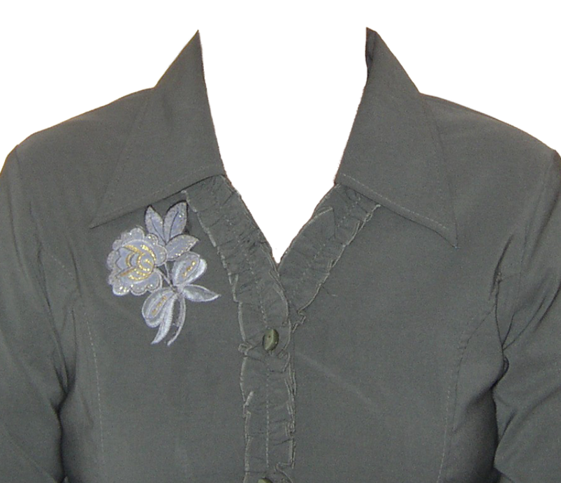
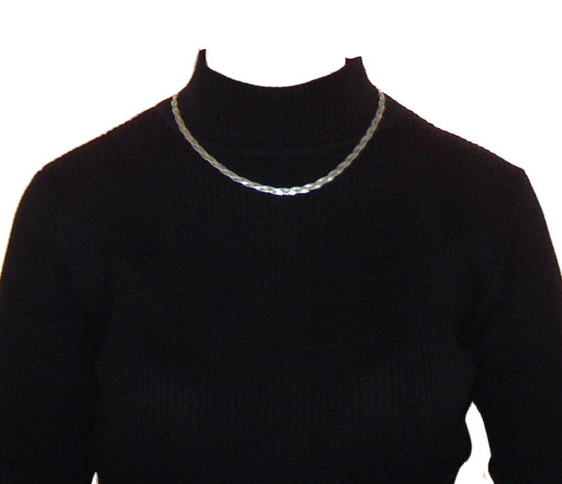

QUIÉN ES ALBANTA SAN ROMÁN?
Pitonisa es aquella mujer vidente que puede adivinar el futuro a través de herramientas esotéricas de videncia, como las cartas del tarot, la bola de cristal, las runa, la quiromancia, entre muchas otras. Hace predicciones y profecías por medio de la magia, para dar a conocer el destino de una persona o de la sociedad, lo le que depará el futuro.
Escucho el susurro de la Luna y mi meta es haceros sonreír, Soy Albanta San Román y veo el futuro.
James
Sobre finales de los 90 estudié en la "Faculty of Astrological Studies" las técnicas de Astro Psicología. Me adentré mas a fondo, con la visión de la Astrología de Liz Greene y Howard Sasportas, entendiendo que muchas veces el carácter hace el destino, los astros inclinan pero no obligan. Una visión más psicológica de esta tecnica se adaptaba en su día a mi mente y carácter con necesidad de pragmatismo. Llegó el momento de seguir avanzando y ayudar con lo que se.

Olga
Desde pequeña mi abuela ya realizaba rituales. Conforme iba creciendo me iba nutriendo de todo eso y finalmente soy yo quien en honor a mi abuela hace estos rituales y terapias alternativas para ayudar a la gente con el amor, el dinero, la amistad,... Conozco a Albanta desde hace 35 años y me alegro de poder formmar parte de su comunidad y poder guiar la vida a personas que no tienen tanta suerte.

María
Formo parte del equipo de Albanta desde hace 28 años y soy quién junto a ella aconsejo a las personas con sus problemas más cotidianos.